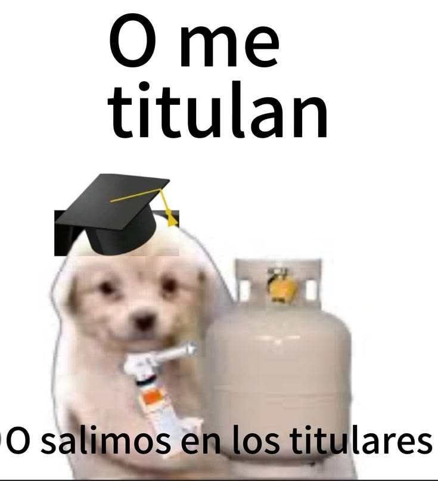

UN CAPÍTULO NUEVO2026
BC
BELÉN CAMPOVERDE
Culminación de una
etapa
Ingeniería en Electrónica,
Telecomunicaciones y Redes
Al fin hice ping
Tras años de procesar datos, desvelos y bugs emocionales, el prototipo por fin se gradúa. Frecuencia sintonizada: 100.3 MHz (Radio Graduación). Me encantaría que me acompañes en estos días tan especiales.

Con cariño,
Belén
PRIMER ENCUENTRO
Defensa
Defensa
pública
De mi trabajo de titulación
27OCTUBRE
2026
2026
HORA3:00 p. m.
LUGARAuditorio de Ingeniería
Automotriz
VESTIMENTASemiformal
Te espero puntualmente, por favor.
SEGUNDO ENCUENTRO
Mi
Mi
graduación
Escuela Superior Politécnica de Chimborazo
06NOVIEMBRE
2026
2026
HORA8:30 a. m.
LUGARAuditorio General
Dr. Romeo Rodríguez
VESTIMENTASemiformal o formal
EVENTO SOCIALLugar y hora por confirmar
✿
GRACIAS POR SER PARTE
Lo mejor
está por venir.
Me hace muy feliz poder compartir esta alegría contigo.
Belén Campoverde